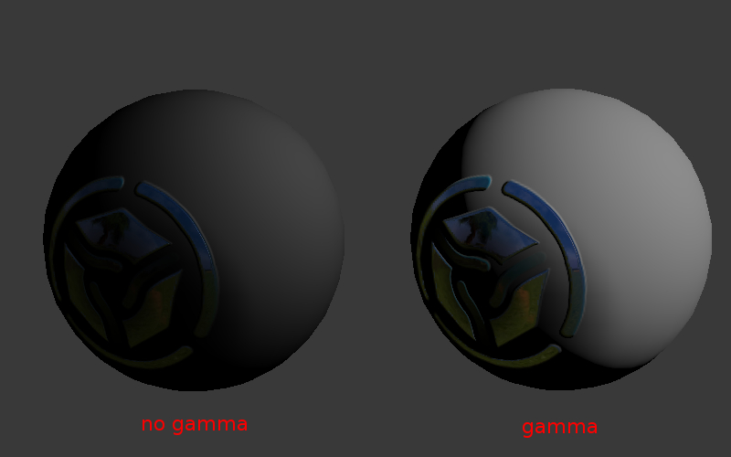

Работа с цветом¶
Содержание
Общее описание¶
Сущность гамма-коррекции заключается в упаковке яркости канала изображения в 8 битах информации.
Стандартные (не HDR) изображения всегда сохраняются в нелинейном пространстве, где тёмные компоненты кодируются большим числом битов чем светлые. Это означает, что значению 0.5 от реальной интенсивности света (физической величины, называемой освещённость) будет соответствовать большее значение, содержащееся в каналах RGB (в самом простом случае \(0.5^{1/2.2} = 0.73)\).
В противном случае 8 бит информации не достаточно для кодирования интенсивности света, что приведёт к тому, что тёмные тона будут отображаться некорректно (например, тёмный градиент будет иметь ступенчатый характер переходов между соседними цветами).
Таким образом, веб-браузеры, как и многие другие программы для просмотра и обработки изображений, работают в нелинейном цветовом пространстве. Однако трёхмерные движки и рендереры работают в линейном пространстве, поскольку только оно может адекватно представлять поведение света в реальном мире. Например, освещённость от двух одинаковых ламп будет ровно в два раза превышать освещённость только от одной.
Безусловно, в таком случае 8 бит информации не будет достаточно, что наглядно иллюстрирует таблица, в которой приведены примерные значения величин освещённости от реальных источников.
Описание |
Освещённость, лк |
|---|---|
Летом в полдень |
17 000 |
Зимой в полдень |
5 000 |
В пасмурный день |
1 000 |
В светлой комнате |
100 |
Ночью в полнолуние |
0.2 |
В безлунную ночь |
0.001 |
Blender при настройке сцены Color Management > Display Device > sRGB работает в линейном пространстве. Значения цветов материалов и настройки источников света соответствует физическим величинам. При работе с текстурами, за исключением карт нормалей необходимо выставить настройку изображения Image > Input Color Space > sRGB. В этом случае при рендеринге будет производится автоматическая распаковка изображения: sRGB->Linear.
Человеческое зрение и мониторы¶
Человеческое восприятие света нелинейно (человек лучше различает градации тусклого света чем яркого), однако свет, поступающий в глаз, по-прежнему должен подчиняться физическим законам (см. пример с лампочками).
Мониторы с электронно-лучевыми трубками (ЭЛТ) имеют нелинейную характеристику яркости от приложенного к их входу электрического напряжения, которое, в свою очередь, определяется значением канала цветности в видеопамяти. Подобную же характеристику копируют жидкокристаллические мониторы. Тем не менее свет, излучаемый такими мониторами, по-прежнему должен подчиняться физическим законам. Например, в идеальном случае при добавлении второго источника света на сцену в виртуальном мире, яркость пикселей на экране монитора должна увеличиваться в два раза.
Таким образом, особенности восприятия человеческого глаза являются причиной, по которой стало возможным осуществлять упаковку каналов цветности, в то время как технические характеристики мониторов имеют вторичное значение по отношению к гамма-коррекции.
Гамма¶
Используется в следующей упрощенной формуле:
Vout = Vinγ
γ < 1 - упаковывающая гамма, γ > 1 - распаковывающая гамма. В наиболее простом случае используются значения 1/2.2 и 2.2 соответственно. Далее вместо термина “гамма-коррекция” будут использованы термины “упаковка” (Linear -> sRGB) и “распаковка” (sRGB -> Linear).
{kind=link}
Коррекция в нодовых материалах¶
Ноды для окраски¶
При использовании текстур и вертексных цветов для окраски (не в качестве масок), необходима распаковка (sRGB -> Linear). Выход Vertex Color ноды Geometry и нода текстуры реализуют распаковку автоматически.
Отметим, что альфа-канал ноды текстуры коррекции не подвергается, его значения находятся в линейном пространстве.
Ноды для масок¶
Текстуры и вертексные цвета могут использоваться в качестве масок, т.е. для смешения цветов или других математических операций. В таком случае необходима упаковка (Linear -> sRGB).
Следует обратить внимание, что выход Vertex Color ноды Geometry и нода текстуры реализуют распаковку автоматически. Это приводит к необходимости дополнительного преобразования обратно в нелинейное пространство, для чего используется специальная нода LINEAR_TO_SRGB или нода GAMMA со значением γ = 1/2.2.
Примечание
Нода LINEAR_TO_SRGB считается устаревшей, следует использовать ноду GAMMA.
Карты нормалей¶
При использовании карт нормалей никакие преобразования не производятся.
Сводная таблица коррекции в нодовых материалах¶
Случай использования |
Коррекция |
|---|---|
Текстура для окраски |
реализуется автоматически в ноде текстуры (альфа-канал коррекции не подвергается) |
Текстура для маски |
GAMMA со значением γ = 0.45 |
Вертексный цвет для окраски |
реализуется автоматически |
Вертексный цвет для маски |
GAMMA со значением γ = 0.45 |
Карта нормалей |
не требуется |
Альфа-композитинг¶
Общие сведения¶
Физически корректный альфа-композитинг осуществляется по формуле [источник]:
\(C_o = C_a \alpha_a + C_b \alpha_b (1 - \alpha_a)\).
Формула отличается от классической операции смешивания (mix, выпуклая комбинация) наличием множителя \(\alpha_b\) во втором слагаемом. Таким образом, для осуществления альфа-композитинга должно быть известно не только значение \(\alpha_a\) пикселя-источника, но и значение \(\alpha_b\) пикселя, поверх которого осуществляется рендеринг.
В случае предварительного умножения значений \(\alpha\) на цветовые каналы (т.н. premultiplied alpha) формула принимает вид:
\(C_o = C_a + C_b (1 - \alpha_a)\).
Последняя формула используется также для расчёта результирующего значения \(\alpha_o\):
\(\alpha_o = \alpha_a + \alpha_b (1 - \alpha_a)\).
Предварительное умножение цветовых каналов на значения \(\alpha\) позволяет сэкономить две операции умножения. Еще более существенным является тот факт, что полученная формула может использоваться многократно, без необходимости деления цвета \(C_o\) на значение \(\alpha_o\) на каждой последующей итерации.
Реализация¶
Функция смешивания в движке Blend4Web имеет вид:
gl.blendFunc(gl.ONE, gl.ONE_MINUS_SRC_ALPHA);
Инициализация контекста WebGL производится с параметром premultipliedAlpha = true (что является значением по умолчанию). Кроме того, на выходе шейдеров производится умножение всех каналов цветности на значение \(\alpha\).
Коррекция цвета¶

Дополнительные настройки¶
- Brightness
Яркость. Значение по умолчанию 0.0.
- Contrast
Яркость. Значение по умолчанию 0.0.
- Exposure
Экспозиция. Значение по умолчанию 1.0.
- Saturation
Экспозиция. Значение по умолчанию 1.0.